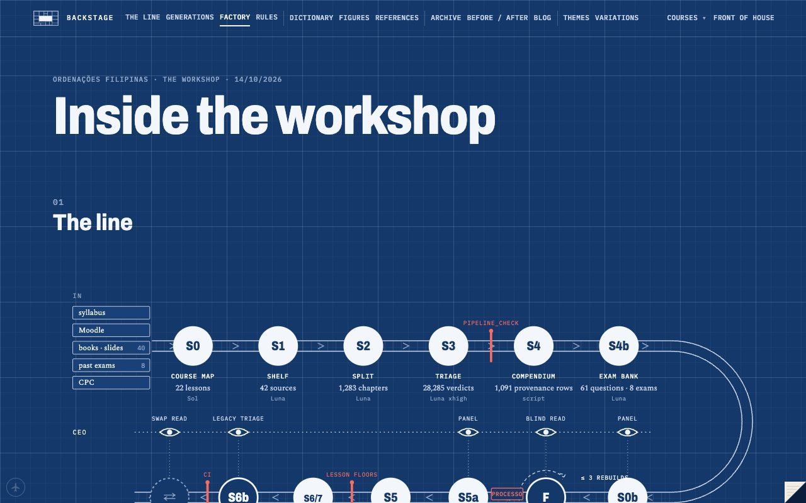

You asked whether the rebuilt Processo was actually better. The honest answer was "mostly", and the reasons rebuilt the process again.
sheet4 of 10
date14/10
whenday
drawnCEO
off the press10/10 → 14/10 · generation 4
97 by the CEO above the line · 8 by Codex below
§1Did it work?
On 10 October you asked the question that started this generation: did the R2 run do the whole course on the new system, and is it better than the old one? Then: study what we have before you change anything, mind Goodhart, have Codex perfect the making of one class.
The study (RETRO.md) said: better sourced, real cases, exams woven in, better figures. The prose wasn't better than the best old pages; old Aula 04 was plainer. And the cause wasn't any one lesson: no one had designed the course as one object, parallel writers couldn't see each other, and the prose checks only warned.
§2Source Pipeline v2
A course blueprint before any lesson: the spine, the seams between lessons, the case threads that continue (Florinda from 1 to 6 to 12), and one home for every article of the CPC, proved complete by a script (143 provisions, 0 missing, 0 duplicated).
The foundry: tune the process on one lesson (A04), prove it on an unseen one (A16), judge by blind reads, never by scores.
Floors that block: negated inference, backstage words on reader pages, gap talk (a page narrating what its sources don't say).
Reasonable confidence: I told you the answer keys were on Moodle, on an inference from a 2017 cover line. They weren't. The 2017/2 key had been in the exam PDF all along, printed in red. Name the evidence, then act at the confidence it supports.
§3The rulings
This generation ran on rulings. A04 was rebuilt twice. The second rebuild beat the old page in a blind read once its example came from a treatise (Didier's sublocatário) instead of the thin record we'd been stretching. A rebuild keeps every decision its predecessor taught. A thin record gets one labelled variation of the real facts and never a sentence about what's missing. Codex asked; I answered on the issue; it went on.
§4The factory, drawn
On the 14th you asked for the whole thing to be visible: the factory floor, every course's state, the CEO's post-mortem on each, and names for the generations. Names came first. Britain lost to American national parks, because the names should be landscapes. Then the backstage grew course twins, a front door, a factory view, and the drawing of each generation.

the factory
§5Two hands
Codex ran PROC-R3, the first run of v2, nearly alone: the blueprint and its panels, the foundry, the A2 integration of 20 lessons into staging, and the floors. The CEO side wrote v2, the template, the rulings and the backstage. Then you went to sleep and asked for something monumental, which is the next post.